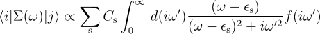
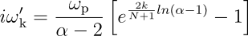
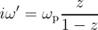
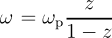

Only relevant if optdriver=3, that is, screening calculations.
This input variable defines whether the irreducible polarizability $\chi^{(0)}_{KS}$ is evaluated taking advantage of time-reversal symmetry or not.
Note that the parallel algorithm gwpara=2 is not compatible with the choiche awtr=0.
Only relevant if optdriver=4, that is, sigma calculations.
For each k-point with number ikptgw in the range (1:nkptgw) and each spin index isppol, bdgw(1,ikptgw,isppol) is the number of the lowest band for which the GW computation must be done, and bdgw(2,ikptgw,isppol) is the number of the highest band for which the GW computation must be done.
When gwcalctyp >= 20, the quasiparticle wavefunctions are computed and represented as linear combination of some Kohn-Sham wavefunctions. In this case bdgw designates the KS wavefunctions used as basis set. For each k-point, indeed, the quasiparticle wavefunctions are expanded considering only the KS states between bdgw(1,ikptgw,isppol) and bdgw(2,ikptgw,isppol).
Note that the initial values given in the input file might be changed inside the code so that all the degenerate states at a given k-point and spin are included. This might happen when symsigma=1 is used or in the case of self-consistent GW calculations.
When symsigma=1, indeed, the diagonal matrix elements of the self-energy are obtained by averaging the unsymmetrized results in the degenerate subspace.
For self-consistent calculations, on the other hand, the basis set used to expand the GW wavefunctions should include all the degenerate states belonging to the same irreducible representation. Only in this case, indeed, the initial symmetries and energy degenerations are preserved.
Only relevant if optdriver=99, that is, Bethe-Salpeter calculations.
The bs_algorithm input variable defines the algorithm employed to calculate the macroscopic dielectric function. Possible values are 1, 2 or 3:
Only relevant if optdriver=99 and bs_algorithm=2 that is, Bethe-Salpeter calculations with the Haydock iterative method.
bs_haydock_niter defines the maximum number of iterations used to calculate the macroscopic dielectric function. The iterative algorithm stops when the difference between two consecutive evaluations of the optical spectra is less than bs_haydock_tol.
Only relevant if optdriver=99 and bs_algorithm=2 that is, Bethe-Salpeter calculations with the Haydock iterative method.
Defines how to terminate the continued fraction expression for the dielectic function. The terminator reduces the number of iterations needed to converge by smoothing the oscillation in the high energy part of the spectrum
Only relevant if optdriver=99 and bs_algorithm=2 that is, Bethe-Salpeter calculations with the Haydock iterative method.
Defines the convergence criterion for the Haydock iterative method. The iterative algorithm stops when the difference between two consecutive evaluations of the macroscopic dielectric function is less than bs_haydock_tol(1). The sign of bs_haydock_tol(1) defines how to estimate the convergence error. A negative value signals that the converge should be reached for each frequency (strict criterion), while a positive value indicates that the converge error is estimated by averaging over the entire frequency range (mild criterion).
bs_haydock_tol(2) defines the quantity that will be checked for convergence:
Only relevant if optdriver=99, that is, Bethe-Salpeter calculations.
This variable defines the index of the lowest occupied band used for the construction of the electron-hole basis set. For spin polarized calculations, one must provide two separated indices for spin up and spin down. An additional cutoff energy can be applied by means of the bs_eh_window input variable.
Only relevant if optdriver=99, that is, Bethe-Salpeter calculations.
It is used to define a cutoff in the e-h basis set. Only those transitions whose energy is between bs_eh_window(1) and bs_eh_window(2) will be considered during the construction of the e-h Hamiltonian.
Only relevant if optdriver=99, that is, Bethe-Salpeter calculations.
Only relevant if optdriver=99, that is, Bethe-Salpeter calculations. This variable governs the choice among the different options that are available for the treatment of Coulomb term of the BS Hamiltonian. bs_coulomb_term is the concatenation of two digits, labelled (A) and (B).
The first digit (A) can assume the values 0,1,2:
The second digit (B) can assume the values: 0,1
Only relevant if optdriver=99, that is, Bethe-Salpeter calculations.
Possible values are 1,2,3
Only relevant if optdriver=99, that is, Bethe-Salpeter calculations.
The bs_coupling input variable defines the treatment of the coupling block of the BS Hamiltonian. Possible values are 0,1.
Only relevant if optdriver=99, that is, Bethe-Salpeter calculations.
bs_freq_mesh(1) defines the first frequency for the calculation of the macroscopic dielectric function. bs_freq_mesh(2) gives the last frequency for the calculation of the macroscopic dielectric function. If zero, bs_freq_mesh(2) is set automatically to MAX(resonant_energy) + 10%. bs_freq_mesh(3) gives the step of the linear mesh used for evaluating the macroscopic dielectric function.
Only relevant if optdriver=99 and bs_algorithm=2,3 that is, Bethe-Salpeter calculations with the Haydock iterative approach or the Conjugate gradient method
bs_nstates defines the maximum number of excitonic states calculated in the direct diagonalization of the excitonic matrix or in the conjugate-gradient method. The number of states should be sufficiently large for a correct description of the optical properties in the frequency range of interest.
Only relevant if optdriver=4, that is, sigma (self-energy) calculations, and gwcalctyp=2, 12 or 22 (contour deformation full-frequency treatment).
cd_frqim_method defines the choice of integration method along the imaginary frequency axis for Contour Deformation calculations. The default method is very robust, fast and optimal for the vast majority of cases. However, for very accurate (“paranoid level”) convergence studies, ABINIT offers the possibility of a variety of methods and grids. Note that as one starts to change the defaults, one needs to carefully consider the grid used. Therefore we recommend that in addition to reading the infomation below, the user reads the description of the input variables freqim_alpha, nfreqim, ppmfrq, gw_frqim_inzgrid.
The integration to be performed for each matrix element of the self energy along the imaginary axis is of the form:

Where ω is the frequency point along the real axis, εs is an eigenvalue, and iω' is the variable along the imaginary axis. Thus the function to be integrated is a Lorentzian weight function centred on the origin (whose FWHM is decided by |ω - εs|), times a function. The function is related to the inverse dielectric matrix. It might have a peaked structure near the origin and is very smooth otherwise. the function decays asymptotically as 1 / iω', so the whole integral converges as this to the third power.
Grids for the integral along the imaginary axis:
All the methods above should execute no matter what grid is used along the imaginary axis, so this is very much under the user's control. The only requirement is that the grid be strictly increasing. The point at zero frequency is assumed to lie on the real axis, so the calculation of that point is controlled by nfreqre and corresponding variables. We highly recommend extracting various elements of the dielectric matrix from the _SCR file using the Mrgscr utility and plotting them for visual inspection.

Here ωp is the plasma frequency (by default determined by the average density of the system, but this can be overridden by setting ppmfrq). N is the total number of gridpoints (set by nfreqim). α is a parameter which determines how far out the final grid point will lie. The final point will be at α·ωp (the default is α = 5, and was hard-coded in older versions of ABINIT). This grid is designed so that approximately half the grid points are always distributed to values lower than the plasma frequency, in order to resolve any peaked structure. If one seeks to increase the outermost reach by increasing ppmfrq one must simultaneously take care to increase nfreqim in order to have the appropriate resolution for the low-frequency region. In more recent versions of ABINIT one can also simply adjust the parameter α by using freqim_alpha. This grid is optimised for speed and accurate results with few gridpoints for cd_frqim_method = 1.
Here ωp is the plasma frequency (default can be overridden by setting ppmfrq). The gridpoints are then picked by an equidistant grid (number of points set by nfreqim) in the interval z ⊂ [0,1]. This grid can easily be uniquely converged by just increasing nfreqim. Again the points are distributed so that approximately half of them lie below the plasma frequency.The Mrgscr utility is handy in optimising the numerical effort expended in convergence studies. By estimating the densest grid one can afford to calculate in the SCR file, and succesively removing frequencies from a single file (using the utility), one only needs to perform the screening calculation once on the dense mesh for a given convergence study. One can also use the utility to merge independent screening calculations over q-points and frequency sections.
Only relevant if optdriver=3 or 4, that is, screening or sigma calculations, and gwcalctyp=2, 12 or 22.
cd_customnimfrqs lets the user define the gridpoints along the imaginary axis by hand. Set this to the number of frequencies you want. The frequencies are specified with cd_imfrqs.
Only relevant if optdriver=3, that is, screening calculations, and gwcalctyp=2, 12 or 22.
cd_imfrqs Specifies the grid points for the imginary axis. Only activated if cd_customnimfrqs is not equal to 0. The number of frequencies is set by the value of cd_customnimfrqs. Example:
cd_customnimfrqs 5 nfreqim 5 cd_imfrqs 0.1 0.2 0.5 1.0 5.0If nfreqim is not equal to cd_customnimfrqs a warning will be issued.
Use at own risk! The use of a custom grid makes it your responsibility that the SUS and SCR files are valid in self-energy (i.e. optdriver=4) calculations, so caution is advised. Note that frequencies have to be strictly increasing, and the point at zero frequency is not considered to be part of the imaginary grid, but rather the grid along the real axis. The calculation of that point should be controlled by nfreqre and related variables.
Only relevant if optdriver=3, that is, screening calculations, and gwcalctyp=2, 12 or 22.
cd_full_grid enables the calculation of the screening [both chi0 and epsilon^(-1)] on a grid in the first quadrant of the complex plane. The grid is determined by the (tensor) product of the grid in real frequency and the grid in imaginary frequency. In the SUS and SCR files the grid points are stored as follows:
Index: 1 . . . nfreqre nfrqre+1 . . . nfreqre+nfreqim nfreqre+nfreqim+1 . . . nfreqre*nfreqim Entry: | purely real freq. | purely imaginary freq. | gridpoints in complex plane |The grid in the complex plane is stored looping over the real dimension as the inner loop and the imaginary as the outer loop. The contents of the generated SUS and SCR files can be extracted for visualisation and further analysis with the Mrgscr utility.
Only relevant if optdriver=3 or 4, that is, screening or sigma calculations, and gwcalctyp=2, 12 or 22.
cd_halfway_freq determines the frequency where half of the number of points defined in nfreqre are used up. The tangent transformed grid is approximately linear up to this point. To be used in conjunction with gw_frqre_tangrid.
Only relevant if optdriver=3 or 4, that is, screening or sigma calculations, and gwcalctyp=2, 12 or 22.
cd_max_freq determines the frequency where all the points defined in nfreqre are used up. To be used in conjunction with gw_frqre_tangrid.
Only relevant if optdriver=3, that is, screening calculations, and gwcalctyp=2, 12 or 22.
cd_subset_freq Specifies that only a subset of the frequencies defined by nfreqre are to be calculated. The first index is the start and the second the end, with index number 1 always being the origin. For example a calculation with nfreqre=100 could be separated into two datasets with:
subset_freq1 1 50 subset_freq2 51 100Any resulting susceptibiltiy (_SUS) and screening (_SCR) files can then be merged with the mrgscr utility.
Note that this does NOT
have to be used in conjunction with gw_frqre_tangrid.
Only relevant if optdriver=3 or 4, that is, screening or sigma calculations, and gwcalctyp=2, 12 or 22.
gw_frqre_tangrid defines a nonuniform grid to be used in frequency, with stepsize increasing proportional to tan(x). This makes the grid approximately linear to start with, with a rapid increase towards the end. Also, this is the grid which gives equal importance to each point used in the integration of a function which decays as 1/x^2. To be used in conjuction with nfreqre, cd max_freq and cd halfway_freq which determine the parameters of the transformed grid.
Only relevant if optdriver=3, that is, screening calculations.
chkgwcomp performs a check on the completeness relation that is assumend to be fulfilled by the oscillator strenghts in the limit of very large number of bands. If chkgwcomp==1, a _DELI file is generated, containing the incompleteness matrix in reciprocal space for each q-point. This matrix is the difference between the identity and the projection over all bands (the oscillator strengths), summed over all occupied states. It is relevant in case one performs a GW + PAW calculation, especially if one is willing to use the extrapolar approximation (gwencomp=1). Note that this closure relation is not fulfilled in PAW, due to the incompleteness of the basis.
Only relevant if optdriver=3 or 4, that is, screening or sigma calculations.
ecuteps determines the cut-off energy of the planewave set used to represent the
independent-particle susceptibility $\chi^{(0)}_{KS}$, the dielectric matrix $\epsilon$, and its inverse.
It is not worth to take ecuteps bigger than four times ecutwfn,
this latter limit corresponding to the highest Fourier components of a wavefunction convoluted with itself.
Usually, even twice the value of ecutwfn might overkill. A value of ecuteps
between 5 and 10 Hartree often leads to converged results (at the level of 0.01 eV for the energy gap).
In any case, a convergence study is worth.
This set of planewaves can also be determined by the other input variables npweps and nsheps, but these are much less convenient to use for general systems, than the selection criterion based on a cut-off energy.
Only relevant if optdriver=4, that is, sigma calculations.
ecutsigx determines the cut-off energy of the planewave set used to generate the exchange part of the self-energy operator. For norm-conserving calculations, it is pointless to have ecutsigx bigger than 4*ecut, while for PAW calculations, the maximal useful value is pawecutdg. Thus, if you do not care about CPU time, please use these values. If you want to spare some CPU time, you might try to use a value between ecut and these upper limits.
This set of planewaves can also be determined by the other input variables npwsigx and nshsigx, but these are much less convenient to use for general systems, than the selection criterion based on the cut-off energy (ecutsigx has to be 0.0 for using these).
Only relevant if optdriver=3 or 4, that is, screening and sigma calculations.
ecutwfn determines the cut-off energy of the planewave set used to represent the wavefunctions
in the formula that generates the independent-particle susceptibility $\chi^{(0)}_{KS}$
(for optdriver=3), or the
self-energy (for optdriver=4).
Usually, ecutwfn is smaller than ecut,
so that the wavefunctions are filtered, and some components are ignored.
As a side effect, the wavefunctions are no more normalized, and also, no more orthogonal.
Also, the set of plane waves can be much smaller for optdriver=3,
than for optdriver=4, although a convergence
study is needed to choose correctly both values.
This set of planewaves can also be determined by the other input variables npwwfn and nshwfn, but these are much less convenient to use for general systems, than the selection criterion based on the cut-off energy (ecutwfn has to be set to 0.0 for using these).
Only relevant if optdriver=3 or 4, that is, screening or sigma calculations.
The basic ingredients needed to perform both a screening and a sigma calculation are the so-called
oscillator matrix elements defined as
$<
k-q, b1 | e^{-i (q+G).r} | k b2 >$ 1)
In reciprocal space, Eq.1 is given by a convolution in which the number of reciprocal
lattice vectors employed to describe the wavefunctions is given
by ecutwfn
Tn the case of screening calculations, the number of G vectors in Eq.1 is defined
by ecuteps,
while ecutsigx defined the number of G used in sigma calculations.
To improve the efficiency of the code, the oscillator matrix elements are evaluated
in real space through FFT techniques, and the fftgw input variable is used to select the FFT
mesh to be used.
fftgw is the concatenation of two digits, labelled (A) and (B) whose value is internally used to define the value of ngfft(1:3) (see the setmesh.F90 routine).
The first digit (A) defines the augmentation of the FFT grid. Possible values are 1, 2 and 3.
The second digit (B) can be chosen between 0 and 1. It defines whether a FFT grid compatible with all the symmetries of the space group must be enforced or not:
Only relevant if optdriver=4, that is, self-energy calculations.
freqim_alpha is used only for numerical integration of the GW self-energy
(gwcalctyp= 2, 12, 22, 9, 19, 29).
freqim_alpha determines the location of the maximum frequency point along the imaginary axis
if the default grid is used in Contour Deformation (numerical integration) calculations. It is set
as α·ωp, where
ωp is the plasma frequency
determined by the average density of the system (this can be set by hand by using the variable ppmfrq). See the section on grids in the descriptive text for cd_frqim_method for a detailed description of the formula.
Only relevant if optdriver=3, that is, screening calculations.
freqremax is used only for numerical integration of the GW self-energy
(gwcalctyp= 2, 12, 22, 9, 19, 29).
freqremax sets the maximum real frequency used to calculate the dielectric matrix in order
to perform the numerical integration of the GW self-energy.
freqremax, freqremin and nfreqre
define the spacing of the frequency mesh along the real axis.
Only relevant if optdriver=3, that is, screening calculations.
freqremin is used only for numerical integration of the GW self-energy
(gwcalctyp= 2, 12, 22, 9, 19, 29).
freqremin sets the minimum real frequency used to calculate the dielectric matrix in order
to perform the numerical integration of the GW self-energy.
freqremin can be used to split a wide frequency interval into smaller subintervals that
can be calculated independently.
The different subintervals can then be merged together with the Mrgscr utility thus obtaining
a single screening file that can used for self-energy calculations.
Note that freqremax, freqremin
and nfreqre define the spacing of the frequency mesh along the real axis.
Only relevant if optdriver=4, that is, sigma calculations.
freqspmax sets the maximum real frequency used to calculate the spectral function from the GW Green's function. freqspmin, freqspmax and nfreqsp define the spacing of an equidistant frequency mesh along the real axis. Alternatively, the variables gw_customnfreqsp and gw_freqsp can be used to make a user-defined grid.
Only relevant if optdriver=4, that is, sigma calculations.
freqspmin sets the minimum real frequency used to calculate the spectral function from the GW Green's function. freqspmin is set to -freqspmax if left undefined. freqspmin, freqspmax, and nfreqsp define the spacing of an equidistant frequency mesh along the real axis. Alternatively, the variables gw_customnfreqsp and gw_freqsp can be used to make a user-defined grid.
Only relevant if optdriver=3 or 4, that is, screening or sigma calculations.
gwcalctyp governs the choice between the different capabilities of the GW code.
Also
Only relevant if optdriver=3 or 4, that is, screening or sigma calculations.
gwcomp governs the use of an extrapolar approximation. If gwcomp==1, one improves the completeness in a truncated sum over states. In practice, this permits one to reduce quite much the number of bands required in the calculation of the screening or of the self-energy. The energy parameter needed in the extrapolar approximation is set by gwencomp. See F. Bruneval, X. Gonze, Phys. Rev. B 78, 085125 (2008) for a description of the methodology.
Only relevant if optdriver=3 or 4, that is, screening or sigma calculations, when gwcomp is equal to 1.
gwencomp sets the energy parameter used in the extrapolar approximation used to improve completeness and make the convergence against the number of bands much faster.
See F. Bruneval, X. Gonze, Phys. Rev. B 78, 085125 (2008) for a description of the methodology.
Only relevant if optdriver=4, that is, sigma calculations.
If gwgamma is 1, the vertex correction will be included leading to what is known as "GWGamma" approximation. see R. Del Sole, L. Reining, and R. W. Godby, Phys. Rev. B 49, 8024 (1994). Note that, in order to include the vertex correction in W, one has to start the sigma calculation from the susceptibility file_SUSC instead of the _SCR file (see getsuscep and irdsuscep ) Not available for PAW calculations.
Only relevant if optdriver=3,4, that is, sigma calculations.
gwmem governs the memory strategy during a screening and/or a sigma run.
Only relevant if optdriver=3 and if gwcalctyp=x1, i.e. a screening calculation for imaginary frequencies.
gwrpacorr governs the calculation of the RPA correlation energy.
Only relevant if optdriver=4, that is, sigma calculations, and gwcalctyp=2, 12 or 22.
gw_customnfreqsp lets the user define the gridpoints along the real frequency axis by hand for the calculation of the self-energy along the real axis. Set this to the number of frequencies you want. The frequencies are specified with gw_freqsp.
Only relevant if optdriver=3 or 4, that is, screening or sigma calculations.
gw_eet governs the use of the effective energy technique (EET). With the EET GW calculations can be performed without summing over the empty states, both in the calculation of the screening and the self-energy. This is achieved by using a single effective energy that takes into account the contributions of all the empty states. See J.A. Berger, L. Reining, and, F. Sottile, Phys. Rev. B (82), 041103(R) (2010) for a more detailed description of the method.
Only relevant if optdriver=3 or 4, that is, screening or sigma calculations and if gw_eet=1 or 2
gw_eet_inclvkb governs the use of the commutator of the non-local part of the pseudo-potential in determining the effective energy of the EET.
Only relevant if optdriver=3 or 4, that is, screening or sigma calculations and if gw_eet=0, 1, or 2
gw_eet_nband governs the number of bands to be used in the effective energy technique (EET). It will only be taken into account if it is higher than the number of occupied bands. If this is not the case, summations will only include occupied states.
Only relevant if optdriver=3 or 4, that is, screening or sigma calculations and if gw_eet=0, 1, or 2
gw_eet_scale sets the prefactor with which the effective energy can be scaled to obtain a faster convergence with respect to the number of empty states.
Only relevant if optdriver=4, that is sigma calculations.
gw_freqsp specifies the grid points for the real frequency axis when the real and imaginary (spectral funtion) parts of sigma are calculated explicitly for post-processing or plotting. Only activated if gw_customnfreqsp is not equal to 0. The number of frequencies is set by the value of gw_customnfreqsp. Example:
gw_customnfreqsp 5 nfreqsp 5 gw_freqsp -0.5 -0.1 0.0 1.0 10.0 eVIf nfreqsp is not equal to gw_customnfreqsp a warning will be issued.
Only relevant if optdriver=4, that is sigma calculations.
gw_qprange is active only when nkptgw is equal to zero (default value). This variable simplifies the specification of the list of kpoints and of the bands to be used for the computation of the quasi-particle corrections. The possible values are:
Only relevant if optdriver=3 or 4, that is, screening or sigma calculations, and gwcalctyp=2, 12 or 22.
gw_frqim_inzgrid creates gridpoints along the imaginary frequency axis by using an equidistant grid in the variable z ⊂ [0,1] where the transform is:
Here ωp is the plasma frequency (default can be overridden by setting ppmfrq). The equidistant grid in z is determined uniquely by nfreqim) and the points are distributed so that half of them lie below the plasma frequency.
Only relevant if optdriver=3 or 4, that is, screening or sigma calculations, and gwcalctyp=2, 12 or 22.
gw_frqre_inzgrid creates gridpoints along the real frequency axis by using an equidistant grid in the variable z ⊂ [0,1] where the transform is:

Here ωp is the plasma frequency (default can be overridden by setting ppmfrq). The equidistant grid in z is determined uniquely by nfreqre) and the points are distributed so that half of them lie below the plasma frequency. This is useful in conjuction with gw_frqim_inzgrid if one needs to use a grid which maps [0,∞[ → [0,1]. Note that typically many more points are needed along the real axis in order to properly resolve peak structures. In contrast, both the screening and self-energy are very smooth along the imaginary axis. Also, please note that this is not an efficient grid for standard Contour Deformation calculations, where typically only a smaller range of frequencies near the origin is required. The maximum value needed along the real frequency axis is output in the logfile during Contour Deformation sigma calculations.
Only relevant if optdriver=8, that is, self-consistent GW calculations.
Gives the maximum number of self-consistent GW cycles (or "iterations"). in which G and/or W will be updated until the quasi-particle energied are converged within gw_toldfeig. gwcalctyp and gw_sctype are used to define the type of self-consistency.
Only relevant if optdriver=3,4,99 that is, screening, sigma or BS calculations, althought the actual meaning of the variable depends on the particular run-level (see discussion below).
gw_nqlwl defines the number of directions in reciprocal space used to describe the non-analytical behaviour of the heads (G = G'=0) and the wings (G=0 or G'=0) of the dielectric matrix in the optical limit (i.e. for q tending to zero). The number of directions is specified by the additional variable gw_qlwl.
When optdriver=3, gw_nqlwl and gw_qlwl define the set of "small" q that will be calculated and stored in the final SCR file. Therefore, the two variables can be used to analyze how the optical spectra depend on the direction of the incident phonon (useful especially in anisotropic systems).
When optdriver=4, gw_nqlwl and gw_qlwl can be used to specify the heads and the wings to be used to perform the quadrature of the correlated part of the self-energy in the small region around the origin. (NB: not yet available, at present the quadrature is performed using a single direction in q-space)
When optdriver=99, gw_nqlwl and gw_qlwl define the set of directions in q-space along which the macroscopic dielectric function is evaluated. By default the BS code calculates the macroscopic dielectric function using six different directions in q-space (the three basis vectors of the reciprocal lattice and the three Cartesian axis).
Only relevant if optdriver=3,4 that is, screening or sigma calculations.
When optdriver=3, gw_qlwl defines the set of q-points around Gamma that are considered during the evaluation of the non-analytical behaviour of the dielectrix matrix. Optical spectra (with and without non-local field effects) are evaluated for each direction specified by gw_qlwl.
This variable is used to partially define the kind of self-consistency for GW calculations. The other piece of information is given by gwcalctyp that defines the particular approximation for the self-energy operator as well as whether the wavefunctions have to replaced by quasi-particle amplitudes.
If gw_sctype is specified in the input file, the code will perform an iterative update of the quantities entering the GW equations until the quasi-particle energies are converged within gw_toldfeig. The maximum number of iterations is specified by gw_nstep. Possible values are:
Only available for PAW and relevant if optdriver=4 that is, sigma calculations.
Theoretical introduction: GW calculations perfomed on top of electronic calculations relying when the frozen-core approximation is used to separate inner-core electrons from valence electrons, only the contribution to the self-energy arising from valence electrons is explicitly accounted for. In the standard approach based on pseudopotentials the contribution to the self-energy due to core electrons is approximated by means of the KS exchange-correlation potential generated by the core density. In the case of GW calculations employing the PAW method, the core contribution to the self-energy can be more accurately estimated in terms of the Fock operator generated by the core wavefunctions. In the simplest approach, the only ingredients required for this more refined treatment are the wave functions of the core electrons in the reference atomic configuration that are calculated during the generation of the PAW setup. This is a good approximation provided that the core wave functions are strictly localized inside the PAW spheres.
gw_sigxcore defines the approximation used to evaluate the core contribution to sigma.
Sets a tolerance for absolute differences of QP energies that will cause one self-consistent GW cycle to stop.
Can be specified in Ha (the default), Ry, eV or Kelvin, since
toldfe has the 'ENERGY' characteristics (1 Ha=27.2113845 eV)
Effective only when self-consistent GW calculations are done (optdriver=8).
Only relevant if optdriver=3,99 that is, a screening or BS calculations.
Possible values of inclvkb are 0,1,2. If inclvkb is 1 or 2, the commutator of the non-local part of the pseudopotential with the position operator is correctly included in the q => 0 contribution. This is unfortunately time-consuming. When inclvkb is 0, this contribution is incorrectly omitted, but the computation is much faster.
The importance of this contribution depends on the number of k points. Turning off inclvkb should be made by experienced users only.
The use of inclvkb=2 is strongy recommended for the calculation of optical properties.
(This documentation is still very primitive, and should be checked) Only relevant if optdriver=3 or 4, that is, a screening or self-energy calculation.
Many-body calculations for isolated systems present a slow convergence with respect to the size of the supercell due to the long ranged Coulomb interaction and the high degree of non-locality of the operators involved. A similar issue occur also in fully periodic systems due to the presence of the integrable Coulomb singularity at G=0 that hinders the convergence with respect to the number of q-points used to sample the Brillouin zone. The convergence can be accelerated by replacing the true bare Coulomb interaction with other expressions icutcoul defines the particular expression to be used for the Coulomb term in reciprocal space. The choice of icutcoul depends on the dimensionality of the system. Possible values of icutcoul are 0 to 6. To be complemented by values of vcutgeo and rcut
Only relevant if optdriver=4, that is, sigma calculations.
For each k-point with number igwpt in the range (1:nkptgw), kptgw(1,igwpt) is the reduced coordinate of the k-point where GW corrections are required. while bdgw(1:2,igwpt) specifies the range of bands to be considered.
At present, not all k-points are possible. Only those corresponding to the k-point grid defined with the same repetition parameters (kptrlatt, or ngkpt) than the GS one, but WITHOUT any shift, are allowed.
Only relevant if optdriver=99, bs_coulomb_term=2x, that is, bethe-salpeter calculations with a model dielectric function.
mdf_epsinf specifies the value of the macroscopic dielectric function used
to model the screening function (see Solid State Commun. 84, 765 (1992)).
The proper spatial symmetry of the screening W(r,r') is enforced using Eq. (7) of Phys. Rev. B 37, (1988)
This input variable is used for the preparation of a GW calculation : it is used in a GS run (where optdriver=0) to generate a _KSS file. In this run, nbandkss should be non-zero. The generated _KSS file can be subsequently used to calculate the irreducible polarizabilty $\chi^{(0)}_{KS}$ using optdriver=3 or to calculate GW corrections setting optdriver=4.
See npwkss for the selection of the number of the planewave components of
the eigenstates to be stored.
The input variable accesswff can be used
to read and write KSS files according to different fileformat
(presently only accesswff=0 and 3 are available in the GW part).
The precision of the KSS file can be tuned through the input variable kssform.
For more details about the format of the abo_KSS file, see the routine outkss.F90.
Very important : for the time being, istwfk must be 1 for all the k-points in order to generate a _KSS file.
Only relevant if optdriver=3, that is, screening calculations.
nfreqim is used only for numerical integration of the GW self-energy
(gwcalctyp= 2, 12, 22, 9, 19, 29).
nfreqim sets the number of pure imaginary frequencies used to calculate
the dielectric matrix in order to perform the numerical integration of the GW self-energy.
at the moment only relevant if optdriver=4, that is, a screening calculation.
depending on the value of >nfreqmidm will calculate the frequency moment of the Dielectric matrix or its inverse, if >nfreqmidm positive : calculate (nth=nfreqmidm) frequency moment of the Dielectric matrix if >nfreqmidm negative : calculate (nth=nfreqmidm) frequency moment of the inverse Dielectric matrix if >nfreqmidm = 0 : calculate first frequency moment of the full polarizability see M. Taut, J. Phys. C: Solid State Phys. 18 (1985) 2677-2690.
Only relevant if optdriver=3, that is, screening calculations.
nfreqre is used only for numerical integration of the GW self-energy
(gwcalctyp= 2, 12, 22, 9, 19, 29).
nfreqre sets the number of real frequencies used to calculate
the dielectric matrix in order to perform the numerical integration of the GW self-energy.
It can be used also in case of GW calculations with plasmon-pole models, i.e gwcalctyp<10, to reduce the number of frequencies used to evaluate the dielectric matrix from the (default) two to one frequency (omega=0) by setting nfreqre=1. This might be a good idea in case one is planning to use ppmodel>1. This will force the calculation of the screening on a single frequency (omega=0) and hence reduce memory and disk space requirement. The only draw back is that the user will not be able to perform self energy calculation using ppmodel=1, since in the last case the dielectric matrix calculated on two frequencies is required. If the user is not sure which ppmodel to use, then s/he is not advised to use this input variable. Using the default values, one must be able to get a screening file that can be used with any ppmodel.
Only relevant if optdriver=4, that is, sigma calculations.
nfreqsp defines the number of real frequencies used to calculate the spectral function of the GW Green's function.
This input variable is used for the preparation of a GW calculation: the GS run (where optdriver=1 and nbandkss/=0) should be followed with a run where optdriver=3. Also, if nbandkss=0, no use of npwkss.
npwkss defines the number of planewave components of the Kohn-Sham states to build the Hamiltonian, in the routine outkss.F90, and so, the size of the matrix, the size of eigenvectors, and the number of available states, to be stored in the abo_KSS file. If it is set to 0, then, the planewave basis set defined by the usual Ground State input variable ecut is used to generate the superset of all planewaves used for all k-points. Note that this (large) planewave basis is the same for all k-points.
Very important : for the time being, istwfk must be 1 for all the k-points.
Only relevant if optdriver=4, that is, sigma calculations. This input variable was called "ngwpt" in versions before v4.3.
nkptgw gives the number of k-points for which the GW calculation must be done. It is used to dimension kptgw
Only relevant for sigma calculations in which the self-energy along the real axis is obtained by performing the analytic continuation from the imaginary axis to the full complex plane via the Pade approximant (optdriver=4 and gwcalctyp=x1).
nomegasi defines the number of frequency points used to sample the self-energy along the imaginary axis. The frequency mesh is linear and covers the interval between OMEGASIMIN=0.01 Hartree and omegasimax.
Only relevant if optdriver=3 and spmeth/=0, that is, screening calculations based on the spectral reprentation of the irreducible polarizability.
nomegasf defines the number of real frequencies used to describe the spectral function associated to the irreducible polarizability $\chi^{(0)}_{KS}$. The frequency mesh will cover the interval between 0 and the maximum (positive) transition energy between occupied and empty states. The delta function entering the expression defining the spectral function is approximated using two different methods according to the value of the spmeth input variable.
It is important to notice that an accurate description of the imaginary part of $\chi^{(0)}_{KS}$ requires an extremely dense frequency mesh. It should be kept in mind, however, that the memory required grows fast with the value of nomegasf.
Only relevant if optdriver=4, that is, sigma calculations.
The number of real frequencies around the KS energy where the self-energy Sigma is evaluated. From these values, the derivative of Sigma at the KS energy is numerically estimated through linear interpolation.
Only relevant if optdriver=3 , that is screening calculations.
In the context of the electronic stopping power of impinging ion in matter,
npvel sets the number of the ion velocities to be calculated via linear response.
When npvel=0, no stopping power calculation is performed.
The direction and the velocity maximum are set with the input variable pvelmax.
Note that the results are output for a Z=1 impinging ion, i.e. a proton.
Only relevant if optdriver=3 or 4, that is, screening or sigma calculations.
npweps determines the size of the planewave set used to represent the independent-particle
susceptibility $\chi^{(0)}_{KS}$, the dielectric matrix $\epsilon$ and its inverse.
See ecuteps (preferred over npweps) for more information.
Only relevant if optdriver=4, that is, sigma calculations.
npwsigx determines the cut-off energy of the planewave set used to generate the
exchange part of the self-energy operator.
See ecutsigx (preferred over npwsigx) for more information.
Only relevant if optdriver=3 or 4, that is, screeening or sigma calculations.
npwwfn determines the size of the planewave set used to represent the wavefunctions
in the formula that generates the independent-particle susceptibility $\chi^{(0)}_{KS}$.
See ecutwfn (preferred over nshwfn) for more information.
Used only in the screening part, that is for optdriver=3.
If nqptdm is equal to 0, the set of q-points for computing the dielectric matrix is determined automatically considering all the possible differences between the k-points contained in the _KSS file. When nqptdm is non-zero, the list of q points is read from qptdm. This allows one to split the big calculation of all the dielectric matrices into smaller calculations that can be performed independently. The _SCR files generated in different runs can be merged thanks to the Mrgscr utility. If nqptdm is equal to -1, the code reports the list of q-points in the log file (YAML format) and then stops.
Only relevant if optdriver=3, that is, screening calculations.
nsheps determines the size of the planewave set used to represent the independent-particle
susceptibility $\chi^{(0)}_{KS}$, the dielectric matrix $\epsilon$ and its inverse.
See ecuteps (preferred over nsheps) for more information.
Only relevant if optdriver=4, that is, sigma calculations.
nshsigx determines the cut-off energy of the planewave set used to generate the
exchange part of the self-energy operator.
See ecutsigx (preferred over nshsigx) for more information.
Only relevant if optdriver=3 or 4, that is, screening or sigma calculations.
nshwfn determines the number of shells of the planewave set used to represent the wavefunctions
in the formula that generates the independent-particle susceptibility $\chi^{(0)}_{KS}$.
See ecutwfn (preferred over nshwfn) for more information.
Only relevant for sigma calculations in which the self-energy along the real axis is obtained by performing the analytic continuation from the imaginary axis to the full complex plane via the Pade approximant (optdriver=4 and gwcalctyp=x1).
omegasimax defines the maximum frequency along the imaginary the axis. In conjunction with nomegasi, omegasimax uniquely defines the linear mesh employed to sample the self-energy along the imaginary axis.
Only relevant if optdriver=4, that is, sigma calculations.
The maximum distance from the KS energy where to evaluate Sigma. Sigma is evaluated at [KS_energy - maxomegasrd, KS_energy + maxomegasrd] sampled nomegasrd times.
Only relevant if optdriver=3 or 4, that is, screening
calculations or sigma calculations.
Usually only effective if GW corrections are evaluated using the plasmon-pole model of Godby-Needs
(i.e ppmodel=1).
In plasmon-pole calculations
In the present status of the GW code, the convolution in frequency space
defining the self-energy operator can be evaluated using two different approaches:
numerical integration and plasmon-pole models.
Methods based on the numerical integration (contour deformation, analytic continuation) require
the knowledge of the screened interaction for several frequencies. These approaches give
the most accurate results but at the price of an increase in the CPU time required.
Alternatively, it is possible to approximate the dynamical behaviour of the screened interaction
through simple analytical expressions, the so-called plasmon-pole models.
In the plasmon-pole model proposed by Godby-Needs (ppmodel=1),
the screening must be available at zero frequency, as well as at another imaginary frequency,
of the order of the plasmon frequency (the peak in the EELS spectrum).
This information is used to model the behaviour of the dielectric matrix
for all frequencies.
During the calculation of the screening, ppmfrq defines the imaginary frequency where the
dielectric matrix is evaluated, in addition to the zero frequency.
During the self-energy run, ppmfrq can be used to define the second frequency to be used
to calculate the plasmon-pole parameters. This is particularly useful when the
SCR file contains several frequencies along the imaginary axis.
In this case the frequency whose value is the closest one to ppmfrq will be selected.
Note that, if the plasmon-pole approximation is good, then, the
choice of ppmfrq should have no influence on the final result.
One should check whether this is the case. In general, the plasmon frequencies of bulk solids
are of the order of 0.5 Hartree.
In Contour Deformation calculations
ppmfrq is here used to override the default value calculated from the average electronic density per unit cell. This can affect the distribution of gridpoints along the imaginary and real frequency axes. See gw_frqim_method, gw_frqim_inzgrid and gw_frqre_inzgrid for more details.
Only relevant if optdriver=3 or 4, that is, screening calculations and self-energy calculations.
Please note also that in the case of ppmodel 4, the plasmon energies are not simple mathematical parameters, but rather have a physical meaning (at least the lowest ones). Thus the calculated plasmon band structure (plasmon energy vs q vector) is reported in the output file for the lowest 10 bands.
Only relevant if optdriver=3, that is screening calculations.
When npvel is larger than 0, it performs electronic stopping power calculations
on a velocity grid along the direction determined by pvelmax.
The vector pvelmax defines both the direction and the maximum velocity.
pvelmax is input in Cartesian coordinates.
Only relevant if optdriver=3, that is, screening calculations, and only if nqptdm/=0.
qptdm contains the set of q-points used in the screening part of ABINIT, instead of the automatic generation of the q points when nqptdm=0. These q points are given in terms of reciprocal space primitive translations (NOT in cartesian coordinates!). For further explanation, see the input variable nqptdm.
Truncation of the Coulomb interaction in real space. The meaning of rcut is governed by the cutoff shape option icutcoul.
If rcut is negative, the cutoff is automatically calculated so to enclose the same volume inside the cutoff as the volume of the solid.
For self-consistent GW runs, rhoqpmix sets the mixing coefficient between the new and the previous electronic densities. This mixing damps the spurious oscillations in the Hartree potential when achieving self-consistency. rhoqpmix is meaningful only when doing self-consistency on the wavefunctions with gwcalctyp >= 20.
Only relevant if optdriver=3,4,99 that is, screening, sigma or Bethe-Salpeter calculations.
The Scissors operator energy added to the conductions states. In some cases, it mimics a second iteration self-consistent GW calculation.
Only relevant if optdriver=4, that is, sigma calculations.
The spmeth input variable defines the method used to calculate the irreducible polarizability $\chi^{(0)}_{KS}$.
By default $\chi^{(0)}_{KS}$ is calculated employing the Adler-Wiser expression (spmeth=0)
with a CPU effort that scales linearly with the number of frequencies.
This approach is convenient when few frequencies are required, and is usually
used in conjunction with plasmon-pole models in which only one or two frequencies are calculated,
according to the value of ppmodel.
Unfortunately a calculation based on the Adler-Wiser expression might be quite CPU demanding
if the matrix elements of the self-energy operator are evaluated by performing numerically
the convolution defining the self-energy.
The integrand function, indeed, has poles above and below the real axis, and
the screened interaction has to be evaluated on a dense frequency mesh in order to obtain accurate
results.
In the spectral method (spmeth=1 or 2) the irreducible polarizability is expressed as the Hilbert transform of the imaginary part. The advantage in using this approach consists in the fact that, once the spectral function is known, the irreducible polarizability for an arbitrary frequency can be easily obtained through inexpensive integrations. On the other hand an accurate evaluation of the imaginary part requires a dense frequency mesh due to the presence of delta functions. Two different approaches can be used to approximate these delta functions thus allowing the use of affordable frequency grids.
Summarizing:
Only relevant if optdriver=3, that is, screening calculations.
The evaluation of the irreducible polarizability for a given q-point requires an integration over the Brillouin zone (BZ) which is approximated by a discrete sum over k-points. In principle the integrand function should be evaluated for each k-point in the BZ, however it is possible to reduce the number of points to be explicitly considered by taking advantage of symmetry properties. The development input variable symchi is used to choose between these two equivalent methods:
With symmorphi=1, symmetry operations with a non-symmorphic vector are allowed. With symmorphi=0, they are not allowed. In the latter case, if the symmetry operations are specified in the input file, the code will stop and print an error message if a non-symmorphic vector is encountered. By contrast, if the symmetry operations are to be determined automatically (if nsym=0), then the set of symmetries will not include the non-symmorphic operations.
Note : this feature exist because in a previous status of the GW calculations, non-symmorphic symmetry operations could not be exploited. Thus, the k points were restricted to the IBZ. In order to prepare GW calculations, and to perform GW calculations, symmorphi=0 was to be used, together with nsym=0.
When equal to one or two, this variable allows for the calculation of U with the cRPA method. An explicit test is shown in automatic tests v7/t23-t24-t25 and in v7/t68. The present implementation is parallelized (as for usual GW calculations), use symetry over k-points only for calculations involving one correlated atom, and can be use when correlated bands are entangled or not. The constrained calculation of the polarisability can be done by eliminating transition betweens correlated bands (and not orbitals) with the variable ucrpa_bands.
For ucrpa = 1, two solutions are possible. The first one is to specify (with the variable ucrpa_bands) the bands to exclude from the polarisability calculation. The second solution is to provide an energy window (with the variable ucrpa_window). The transition inside this window will not be taken into account in the polarisability calculation.
For ucrpa = 2, the ucrpa_bands should be equal to the dmftbandi and dmftbandf values, and the polarisability of the correlated subspace is constructed with a band and k-point dependant weight. A short presentation of the method and some aspect of the implementation can be found in Section II and Appendix A of B. Amadon, T. Applencourt and F. Bruneval Phys. Rev. B 89, 125110 (2014).
Gives the first and last correlated bands for the cRPA calculation of the polarisability.
Specify a window of energy for the cRPA calculation of the polarisability. The transition inside this window will not be taken into account in the constrained polarisabilty calculations.
The lower bound and the upper bound energies must be specified (two real numbers) with respect to the position of the Fermi level.
Only relevant if optdriver=4 that is sigma calculations.
This option is used to switch on the symmetrization of the self-energy matrix elements (symsigma=1). In this case the BZ integration defining the self-energy matrix elements is reduced to an appropriate irreducible wedge defined by the point group of the wave-vector k specified in the kptgw list.
The symmetrized expression leads to a considerable speedup of the run but, unfortunately, this option is not yet compatible with self-consistent GW calculations (see gwcalctyp).
The algorithm implemented in symsigma=1 constructs a symmetric invariant for the diagonal matrix elements of the self-energy by simply averaging the GW results within the degenerate subspace. Therefore particular care has to be taken in the presence of accidental degeneracies. since GW calculations performed with symsigma=1 won't be able to remove the initial accidental degeneracy.
(No explicit documentation, please see https://listes-2.sipr.ucl.ac.be/abinit.org/arc/forum/2008-11/msg00087.html for the time being)
vcutgeo is used in conjunction with icutcoul to specify the geometry used to truncate the Coulomb interaction as well as the particular approach to be used. It has a meaning only for the cylindrical symmetry (icutcoul=1) or in the case of surfaces icutcoul=2. For each geometry, two different definition of the cutoff region are available (see Phys. Rev. B 73, 233103 and Phys. Rev. B 73, 205119 for a complete description of the methods)
In Beigi's method (Phys. Rev. B 73, 233103), the cutoff region is given by the Wigner-Seitz cell centered on the axis of the cylinder. The cutoff region is thus automatically defined by the unit cell and there's no need to specify When rcut.
To define a cylinder along the z-axis use the following two lines. icutcoul 1 rprim 1 0 0 0 1 0 0 0 1 vcutgeo 0 0 1
Please note that Beigi's method is implemented only in the case if an orthorombic Bravais lattic. For hexagonal lattices, one has to use the method of Rozzi (Phys. Rev. B 73, 205119) In this case, the interaction is truncated in a finite cylinder. Contrarily to the first approach, here one has to specify both the radius of the cylinder with rcut as well as the length of the cylinder along the periodic dimension that should always be smaller than the extension of the Born von Karman box. The length of the cylinder is given in terms of the primitive vector along the periodic direction.
For example, in order to define a finite cylinder along z of radius 2.5 Bohr and length 3*R3 icutcoul 1 rprim 1 0 0 0 1 0 0 0 1 vcutgeo 0 0 -3.0 # note the minus sign rcut 2.5
For surface calculations (icutcoul=2), vcutgeo is used to define the two periodic directions defining the surface. Also in this case two different techniques are available. In the method of Beigi, the (positive) non-zero components of vcutgeo define the periodic directions of the infinite surface. The interaction is truncated within a slab of width L where L is the length of the primitive vector of the lattice along the non-periodic dimension. For example: icutcoul 2 rprim 1 0 0 0 1 0 0 0 1 vcutgeo 1 1 0 It is also possible to define a finite surface by employing negative values For example: icutcoul 2 vcutgeo -3 -2 0 defines ....
Only relevant if optdriver=3,4,99 that is, screening, sigma or BS calculations.
It is meant to avoid some divergencies that might occur during the evaluation of the Adler-Wiser expression of the irreducible polarizability (optdriver=3) or during the numerical treatment of the integrals defining the contribution to the self-energy matrix elements (optdriver=4). If the denominator becomes smaller than zcut, a small imaginary part (depending on zcut) is added, in order to avoid the divergence.
When optdriver=99, zcut defines the small complex shift
used to avoid divergences in the expression for the macroscopic dieletric function.
It simulates the experimental uncertainty and the finite lifetime of the quasiparticles
(although the true lifetime should be k- and band-dependent).
The value of zcut affects the number of iteration needed to achieve convergence
in the Haydock iterative method. In this case, zcut should be
larger than the typical distance between the eigenvalues of the exciton Hamiltonian.
Ideally, one should make a convergence study decreasing the value of zcut for increasing number of k-points.